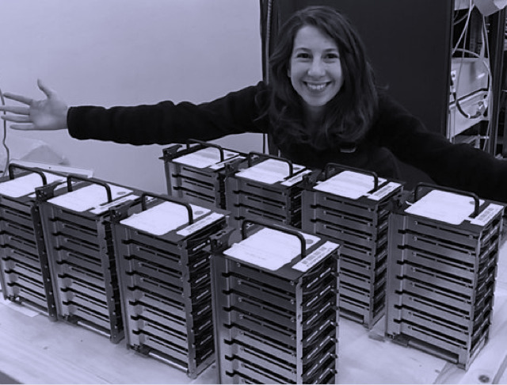
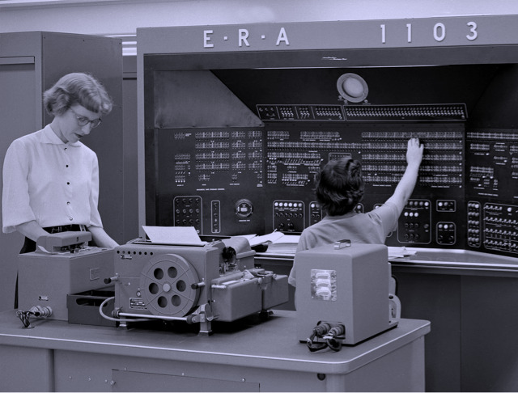
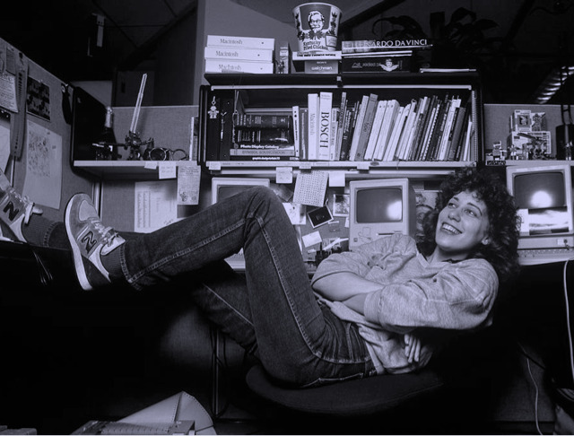

Hello world pale blue dot.
El portal de podcasts que explora el mundo de la programación y la tecnología. Nuevos episodios, todos los jueves cada 15 días.
CONOCÉ MÁSEpisodios

De dónde venimos
Our posturings, our imagined self-importance, the delusion that we
have some privileged position in the Universe, are challenged by
this point of pale light.
Our planet is a lonely speck in the great enveloping cosmic dark.
In our obscurity, in all this vastness, there is no hint that help
will come from elsewhere to save us from ourselves.
Invitadas/os estelares



Algunos de nuestros temas

Trabajo remoto

Repensando la programación

Bases del código

Seguridad informática